전자계산기기사 (2010-05-09 기출문제)
1과목: 시스템 프로그래밍
1. 어셈블리어에서 어떤 기호적 이름에 상수 값을 할당하는 명령은?
- EQU
- ASSUME
- LIST
- EJECT
(정답률: 82%)

2. 어셈블리어에 대한 설명으로 옳지 않은 것은?
- 어셈블러에 의하여 기계어로 번역됨
- 어셈블리어는 기종에 따라 내용의 차이가 없음
- 기호로 표기되어 프로그램을 작성하기가 기계어보다 유리함
- 고급 언어로 작성된 프로그램보다 처리시간이 일반적으로 빠름
(정답률: 64%)
3. 세그먼테이션과 페이징 기법에 관한 설명으로 틀린 것은?
- 페이징 시스템의 페이지는 물리적 단위로 크기가 가변적이다.
- 세그먼트는 논리적 단위로 분할된 가변적 크기를 가진다.
- 페이징의 경우 기억장소의 내부적 단편화가 일어날 수 있다.
- 세그먼테이션의 경우 논리주소는 세그먼트 번호와 세그먼트 내의 오프셋 조합으로 이루어진다.
(정답률: 61%)
4. 프로그램 작성시 한 프로그램 내에서 동일한 코드가 반복될 경우 반복되는 코드를 한번만 작성하여 특정 이름으로 정의한 후, 그 코드가 필요할 때마다 정의된 이름을 호출하여 사용하는 것은?
- 필터
- 리터럴 테이블
- 매크로
- 프로세스
(정답률: 88%)
5. 로더의 기능이 아닌 것은?
- allocation
- linking
- compile
- loading
(정답률: 80%)
6. 라운드 로빈 스케줄링 기법에 대한 설명으로 틀린 것은?
- 시간할당량이 클수록 FCFS와 같아진다.
- 시분할 시스템을 위해 고안된 방식이다.
- 실행시간이 가장 짧은 프로세스에게 먼저 CPU를 할당한다.
- 시간할당량이 작을수록 문맥교환이 빈번하게 발생한다.
(정답률: 43%)
7. 언어번역 프로그램이 아닌 것은?
- linker
- assembler
- compiler
- interpreter
(정답률: 66%)
8. 매크로의 기능이 추가된 프로그램의 실행과정에서 매크로 프로세서가 필요한 시점은?
- 원시 프로그램이 번역되기 직전
- 원시 프로그램이 번역된 직후
- 번역된 목적모듈들이 연결되기 직전
- 연결된 하나의 모듈이 주기억장치에 적재되기 직전
(정답률: 60%)
9. 라이브러리에 기억된 내용을 프로시저로 정의하여 서브루틴으로 사용하는 것과 같이 사용할 수 있도록 그 내용을 현재의 프로그램 내에 포함시켜 주는 어셈블리어 명령은?
- CREF
- ORG
- INCLUDE
- EVEN
(정답률: 86%)
10. 컴퓨터에서 프로그램 언어의 해독 순서를 바르게 나열한 것은?
- 컴파일러 → 링커 → 로더
- 로더 → 링커 → 컴파일러
- 컴파일러 → 로더 → 링커
- 링커 → 컴파일러 → 로더
(정답률: 66%)
11. 목적 프로그램을 기억 장소에 적재시키는 기능만 수행하는 로더로서, 할당 및 연결 작업은 프로그래머가 프로그램 작성시 수행하며, 재배치는 언어번역 프로그램이 담당하는 것은?
- Compile And Go Loader
- Direct Linking Loader
- Absolute Loader
- Dynamic Loading Loader
(정답률: 24%)
12. 매크로 프로세서의 기능으로 옳지 않은 것은?
- 매크로 정의 인식
- 매크로 정의 저장
- 매크로 호출 인식
- 매크로 호출 저장
(정답률: 70%)
13. 어셈블러에 의하여 독자적으로 번역된 여러 개의 목적 프로그램과 프로그램에서 사용되는 내장 함수들을 하나로 모아서 컴퓨터에서 실행될 수 있는 실행 프로그램을 생성하는 역할을 하는 것은?
- library program
- pseudo instruction
- reserved instruction set
- linkage editor
(정답률: 68%)
14. Bench Mark Program이란?
- 저급 언어를 고급 언어로 변환시키는 프로그램
- 컴퓨터의 성능 분석을 위한 프로그램
- 고급 언어를 기계어로 번역하는 프로그램
- 컴퓨터 시스템을 초기화시키는 프로그램
(정답률: 86%)
15. 기계어에 대한 설명으로 옳지 않은 것은?
- 컴퓨터가 이용할 수 있는 0과 1만으로 명령을 표현한다.
- 컴퓨터의 내부구성과 종류에 따라 의존성을 가진다.
- 전문적인 지식이 없어도 수정, 보완, 변경이 가능하다.
- 처리속도가 빠르다.
(정답률: 84%)
16. 어셈블리 언어를 두 개의 Pass로 구성하는 주된 이유는?
- 한 개의 Pass만을 사용하는 경우는 프로그램의 크기가 증가하여 유지 보수가 어려움
- 한 개의 Pass만을 사용하는 경우는 프로그램의 크기가 증가하여 처리속도가 감소함
- 한 개의 Pass만을 사용하는 경우는 기호를 모두 정의한 뒤에 해당 기호를 사용해야 함
- Pass1과 Pass2를 사용하는 경우는 프로그램이 작아서 경제적임
(정답률: 91%)
17. 작업제어 언어에 대한 설명으로 옳지 않은 것은?
- 프로그램의 순서적 실행을 지시한다.
- 입출력 장치의 배당을 위한 프로그램에서 정의된 논리적 장치와 물리적 장치를 연결한다.
- 프로그램 및 시스템 운영에 관한 지시를 운영체제에게 전달한다.
- 기종에 상관없이 동일하다.
(정답률: 73%)
18. 프로그램 실행을 위하여 메모리 내에 기억 공간을 확보하는 작업은?
- linking
- allocation
- loading
- compile
(정답률: 87%)
19. 시스템의 성능 평가 기준과 거리가 먼 것은?
- 비용
- 처리 능력
- 반환 시간
- 신뢰도
(정답률: 86%)
20. 주소바인딩의 의미로 가장 적합한 것은?
- 물리적 주소공간에서 논리적 주소공간으로의 사상
- 논리적 주소공간에서 물리적 주소공간으로의 사상
- 물리적 주소공간에서 물리적 주소공간으로의 사상
- 주소를 심벌로 사상
(정답률: 67%)
2과목: 전자계산기구조
21. 고속의 입출력장치에 적합하고 버스트(burst) 방식으로 데이터를 전송하는 것은?
- selector 채널
- multiplexer 채널
- 데이터통신 프로세서
- 데이터 채널
(정답률: 71%)
22. 인터럽트 체제에서 우선순위 부과 방법과 거리가 가장 먼 것은?
- polling
- interrupt priority chain
- interrupt service routine
- interrupt request chain
(정답률: 57%)
23. 정규화된 부동 소수점(floating point) 방식으로 표현된 두 수의 덧셈 과정이다. [보기] 중 그 순서가 올바른 것은?
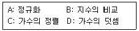
- B→C→D→A
- C→B→D→A
- A→C→B→D
- A→B→C→D
(정답률: 66%)
24. 등각속도(CAV) 방식의 특징이 아닌 것은?
- 모든 트랙의 저장 밀도가 같다.
- 디스크 저장 공간이 비효율적으로 사용된다.
- 회전 구동장치가 간단하다.
- 디스크 평판이 일정한 속도로 회전한다.
(정답률: 47%)
25. 다음에서 인터럽트 벡터에 필수적인 것은?
- 분기번지
- 메모리
- 제어규칙
- Acc
(정답률: 71%)
26. 다중처리기 상호 연결 방법 중 시분할 공유버스를 설명한 것은?
- 시분할 공유와 기타방법의 혼합
- multiprocessor를 비교적 경제적인 망으로 구성
- 공유버스 시스템에서 버스의 수를 기억장치의 수만큼 증가시킨 구조
- 프로세서, 기억장치, 입출력 장치들간에 하나의 버스 통신로만을 제공하는 방법
(정답률: 68%)
27. 외부하드디스크 드라이버, CD-ROM 드라이버, 스캐너 및 자기 테이프 백업 장치 등을 연결할 수 있는 장치는?
- RS-232C 포트
- 병렬 포트
- SCSI
- 비디오 어댑터 포트
(정답률: 61%)
28. DMA(Direct Memory Access)에 대한 설명으로 옳은 것은?
- CPU와 레지스터를 직접 이용하여 자료를 전송한다.
- 일반적으로 속도가 느린 입출력 장치에 사용한다.
- 입출력에 사용할 CPU 레지스터 정보를 DMA 제어기에 보낸다.
- CPU와 무관하게 주변장치는 기억장치에 access 하여 데이터를 전송한다.
(정답률: 67%)
29. CPU가 인스트럭션을 수행하는 순서로 옳은 것은?
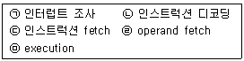
- ㉢→㉠→㉡→㉣→㉤
- ㉣→㉢→㉡→㉤→㉠
- ㉡→㉢→㉣→㉤→㉠
- ㉢→㉡→㉣→㉤→㉠
(정답률: 50%)
30. 디멀티플렉서(demultiplexer)에 대한 설명 중 옳은 것은?
- data selector라고도 불린다.
- 2n개의 input line과 n개의 output line을 가졌다.
- n개의 input line과 2n개의 output line을 가졌다.
- 1개의 input line과 n개의 selection line을 갖는다.
(정답률: 73%)
31. 8진수 0.54를 10진수로 나타내면?
- 0.6875
- 0.8756
- 0.7568
- 0.5687
(정답률: 71%)
32. 10진수 -456을 PACK 형식으로 표현한 것은?
- 45 6D
- -4 56
- 45 6F
- F4 56
(정답률: 79%)
33. 3초과 코드(excess-3 code) 1011은 10진수로 얼마인가?
- 8
- 11
- 14
- 17
(정답률: 77%)
34. 스택 메모리가 사용되는 경우로 가장 옳은 것은?
- 분기 명령이 실행될 경우
- DMA 요구가 받아들여졌을 경우
- 분기 명령과 DMA 요구가 받아들여졌을 경우
- 인터럽트가 받아들여졌을 경우
(정답률: 57%)
35. 캐시의 쓰기 정책 중 write-through 방식의 단점에 해당하는 것은?
- 주기억장치의 내용이 무효 상태인 경우가 있다.
- 쓰기 시간이 길다.
- 읽기 시간이 길다.
- 하드웨어가 복잡하다.
(정답률: 70%)
36. 한 단어가 25비트로 이루어지고 총 65536개의 단어를 가진 기억장치가 있다. 이 기억장치를 사용하는 컴퓨터 시스템의 명령어 코드는 하나의 indirect mode bit, operation code, processor register를 나타내는 2비트와 address part로 구분되어 있다. MBR, MAR, PC에 필요한 각각의 bit 수는?
- MBR: 23, MAR: 15, PC: 15
- MBR: 23, MAR: 15, PC: 14
- MBR: 25, MAR: 16, PC: 16
- MBR: 25, MAR: 16, PC: 15
(정답률: 87%)
37. IRG(Inter Record Gap)로 인한 기억 공간의 낭비를 줄이기 위하여 물리적 record를 만드는데 필요한 것은?
- Blocking
- Mapping
- Paging
- Buffer
(정답률: 55%)
38. 다음 중 병렬처리기 방식이 아닌 것은?
- 파이프라인 방식
- 배열 방식
- VLSI처리기 방식
- 벡터 방식
(정답률: 47%)
39. 다중 처리기의 목표가 아닌 것은?
- 보존성 향상
- 속도 향상
- 신뢰성 향상
- 유연성 향상
(정답률: 60%)
40. 인스트럭션 세트의 효율성을 높이기 위하여 고려할 사항이 아닌 것은?
- 기억공간
- 레지스터의 종류
- 사용빈도
- 주소지정 방식
(정답률: 40%)
3과목: 마이크로전자계산기
41. 입출력 인터페이스 회로의 기본적인 기능이 아닌 것은?
- 데이터형식의 변환
- 결과 처리
- 전송의 동기 제어
- 신호레벨의 정확
(정답률: 31%)
42. 컴퓨터 제어 장치의 기본 사이클에 속하지 않는 것은?
- fetch cycle
- direct cycle
- execute cycle
- interrupt cycle
(정답률: 43%)
43. 입출력장치의 비동기식 제어방식에서 가장 많이 사용되는 방식은?
- open loop 방식
- closed loop 방식
- handshake 방식
- inter lock 방식
(정답률: 69%)
44. 중앙처리장치에서 micro operation이 순서적으로 일어나게 하려고 할 때 필요한 것은?
- 스위치
- 레지스터
- 누산기
- 제어신호
(정답률: 57%)
45. 어떤 마이크로컴퓨터 시스템에서 버스 사이클과 DMA 전송을 실행할 경우 시스템 버스 요청 및 이양에 소요되는 시간은 500[ns]이고 DMA 전송시 데이터 전송률이 100[KByte/s]일 경우 버스트(burst) 모드로 200바이트의 데이터를 전송할 때 소요되는 시간은? (단, 100[kByte]는 100000[Byte]로 계산한다.)
- 200[μs]
- 200.5[μs]
- 2000[μs]
- 2000.5[μs]
(정답률: 45%)
46. 마이크로프로세서에서 데이터가 저장된 또는 저장될 기억장치의 장소를 지정하기 위해 사용하는 버스(bus)는?
- 레지스터 연결 버스
- 데이터 버스
- 주소 버스
- 제어 버스
(정답률: 58%)
47. 마이크로컴퓨터의 시스템 소프트웨어 중 사용자가 작성한 프로그램을 실행하면서 에러를 검출하고자 할 때 사용되는 것은?
- 로더(loader)
- 디버거(debugger)
- 컴파일러(compiler)
- 텍스트 에디터(text editor)
(정답률: 81%)
48. UART에서 신호(시그널)가 Low라면 모뎀 또는 데이터 셋이 전화 링 신호를 받았음을 나타내는 것은?
- TXD
- nDSR
- nRI
- nDCD
(정답률: 40%)
49. DRAM(dynamic RAM)에 대한 설명 중 옳지 않은 것은?
- refresh 회로가 필요하다.
- 가격이 저렴하고, 전력 소모가 적다.
- 경제성이 뛰어나 주기억장치로 많이 사용된다.
- 비소멸성(비휘발성) 소자이다.
(정답률: 62%)
50. 다음 마이크로 오퍼레이션과 관련 있는 것은? (단, EAC: 끝자리올림과 누산기, AC: 누산기)
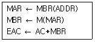
- AND
- ADD
- JMP
- BSA
(정답률: 70%)
51. 격리(isolated)형과 메모리 맵(memory map)형 입출력 방식에 대한 설명 중 옳지 않은 것은?
- 메모리 맵 입출력 방식은 메모리의 번지를 I/O
- 메모리 맵 입출력 방식은 메모리에 대한 제어신호만 필요로 하고, 메모리와 입출력 번지 사이의 구분이 필요하다.
- 격리형 입출력 방식은 마이크로프로세서와 메모리 및 I/O 장치를 인터페이스 할 때 메모리와 I/O 장치의 입출력 제어신호(Read/Write)를 별도로 하여 구성하는 방법이다.
- 격리형 입출력 방식은 I/O 인터페이스 번지와 메모리 번지가 구별된다.
(정답률: 43%)
52. 브트스트랩핑 로더(bootstrapping loader)가 하는 일은?
- 시스템을 효율적으로 사용할 수 있게 한다.
- 컴퓨터 가동시 운영체제(operating system)를 주기억 장치로 읽어온다.
- 모든 주변장치를 초기화한다.
- 명령어를 해석한다.
(정답률: 63%)
53. 기억장치 사이클 타임(Mt)과 기억장치 접근 시간(At)의 관계식으로 가장 옳은 것은?
- Mt = At
- Mt ≥ At
- Mt ≤ At
- Mt > At
(정답률: 59%)
54. 다음 중 디버거인 ICE(In-Circuit Emulator)의 특징에 속하지 않은 것은?
- 롬 프로그램만 다운로딩할 수 있는 기능
- 임의의 어드레스로 실행을 정지시키는 브레이크포인트 기능
- 실행시간을 실시간으로 확인 가능한 리얼타임 트레이스 기능
- 레지스터로의 데이터 설정 기능
(정답률: 72%)
55. 펌웨어(firmware) 메모리에 대한 설명 중 틀린 것은?
- ROM속에 선택된 프로그램이나 명령을 영원히 내장하는 것을 펌웨어라 한다.
- 일반적으로 주기억 장치보다는 가격도 저렴하고 용량도 크며, 하드웨어의 기능을 펌웨어로 변경하며 속도가 빨라진다.
- 반도체 메모리에 명령어가 영원히 저장되기 때문에 고체 상태 소프트웨어라고도 불린다.
- ROM으로 된 펌웨어는 전원이 차단되어도 내용이 지워지지 않으므로 하드웨어와 소프트웨어의 기능을 대신할 수 있다.
(정답률: 60%)
56. 제어 프로그램 개발시 중요하게 고려되어야 하는 것과 가장 거리가 먼 것은?
- 수행 속도가 빠르도록 설계되어야 한다.
- 기억장소를 효율적으로 활용하도록 한다.
- 저급언어보다는 고급언어를 이용하여 작성한다.
- 오류를 최대한 줄여 정확한 제어가 이루어지도록 한다.
(정답률: 74%)
57. 32 및 64비트 버스 규격으로 이후 수정, 확장되어 IEEE 1014로 표준화된 것은?
- S-100
- RS-232C
- IEEE-488
- VME bus
(정답률: 40%)
58. SP(stack pointer)가 기억하고 있는 내용의 메모리 번지를 지정하는 스택 구조는?
- 연속(cascade) 스택
- 모둘(module) 스택
- 메모리 스택
- 간접번지지정 스택
(정답률: 57%)
59. DMA(Direct Memory Access) 동작시 사용되는 레지스터로서 적합하지 않은 것은?
- 제어 레지스터
- 주소 레지스터
- 데이터 레지스터
- 카운터
(정답률: 15%)
60. 자료전송 방법에 관한 설명 중 옳지 않은 것은?
- 비동기 전송에서는 문자와 문자 사이 시간 간격은 일정하다.
- 비동기 전송에서는 시작 비트와 정지 비트가 필요하다.
- 동기 전송에서는 송신측과 수신측의 클록에 대한 동기가 필요하다.
- 동기 전송은 1200 bps(bit per second) 이하의 통신 선로에 적합하다.
(정답률: 50%)
4과목: 논리회로
61. MUX의 입력이 진리표처럼 주어질 때 기대되는 출력값 Y는?
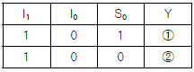
- ①: 1, ②: 0
- ①: 1, ②: 1
- ①: 0, ②: 0
- ①: 0, ②: 1
(정답률: 54%)
62. 다음 그림과 같은 회로의 명칭은?
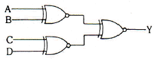
- 다수결 회로
- 우수 패리티 발생 회로
- 기수 패리티 발생 회로
- 비교 회로
(정답률: 53%)
63. 다음 논리회로를 간단히 하면?
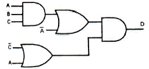
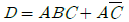
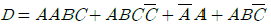
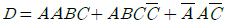
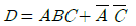
(정답률: 55%)
64. 다음 그림과 같은 C-MOS 게이트의 논리기능은?
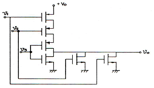
- NOR
- OR
- NAND
- AND
(정답률: 36%)
65. 다음 그림은 D 플립플롭의 진리표이다. Q(t+1)의 상태는?
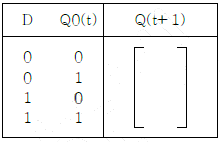
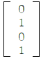
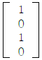
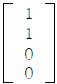
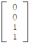
(정답률: 60%)
66. 디지털 IC의 내부 오류(internal fault) 가 아닌 것은?
- 두 핀간의 단락
- 입출력의 개방
- 신호 라인의 개방
- 입출력의 Vcc 또는 접지와의 단락
(정답률: 55%)
67. 다음의 상태 변환도처럼 동작하는 순서 논리 회로를 설계할 때 JK 플립플롭을 사용한다면 필요한 플립플롭의 수는 최소 몇 개인가?
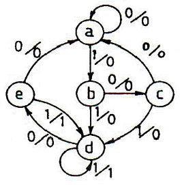
- 2개
- 3개
- 4개
- 5개
(정답률: 60%)
68. 반가산기의 설명 중 옳게 나타낸 것은?
- 배타적 논리합(XOR) 회로와 논리곱(AND) 회로로 구성된다.
- 합은 두 수 A, B의 논리합이다.
- 자리올림 C0은 두 수 A, B의 논리합이다.
- 자리올린 C0은 두 수 A, B의 배타적 논리합이다.
(정답률: 74%)
69. 2진수 (11010)2를 10진수로 변환하면?
- 26
- 27
- 28
- 29
(정답률: 74%)
70. 6개의 JK 플립플롭을 사용하여 설계한 존슨카운터의 디코딩용 게이트 수는?
- 6개
- 12개
- 24개
- 64개
(정답률: 57%)
71. 다음 회로의 기능은?
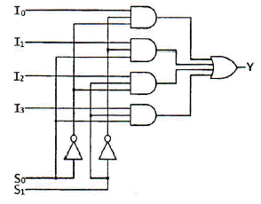
- 4×1 MUX
- 6×1 MUX
- 4×1 디코더
- 6×1 인코더
(정답률: 60%)
72. 다음 그림의 3 상태(tri-state) IC에서 출력 가능한 상태가 아닌 것은?
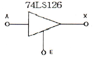
- High
- Low
- Hi-Z
- Low-Z
(정답률: 62%)
73. 플립플롭의 동작 특성 중 클록펄스가 상승에지 변이 이후에도 입력값이 변해서는 안 되는 일정한시간을 의미하는 것은?
- 전파지연시간+홀드시간+설정시간
- 전파지연시간
- 홀드시간
- 설정시간
(정답률: 64%)
74. F(w,x,y,z) = Σ(0,1,2,4,5,6,8,9,12,13,14)을 불 함수를 간략화한 결과는?
- F = x+y+wz
- F = y+z+xy
- F = y+w z+xz
- F = x+z
(정답률: 57%)
75. 다음 논리식과 같은 것은?
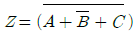
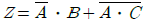
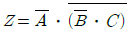
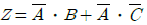
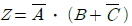
(정답률: 36%)
76. 여러 개의 회로가 단일 회선을 공동으로 이용하여 신호를 전송하는데 필요한 장치는?
- 멀티플렉서
- 인코더
- 디코더
- 디멀티플렉서
(정답률: 66%)
77. 논리함수식 A(A+B+C+D)를 간략화 하면?
- 1
- 0
- A
- B
(정답률: 79%)
78. 다음 회로의 연산 결과는?
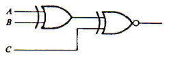
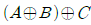
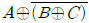
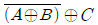
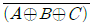
(정답률: 58%)
79. BCD 가산기 회로에서 A3 A2 A1 A0에 0111, B3 B2 B1 B0에 1001이 들어왔을 때 C0와 Z3 Z2 Z1 Z0 출력으로 옳은 것은?
- 1, 1011
- 1, 0111
- 1, 0110
- 0, 0111
(정답률: 56%)
80. F(W, X, Y, Z) = W‘X+YZ’의 보수를 구하면?
- (W+X‘)(Y+Z)
- (W+X‘)(Y’+Z‘)
- (W+X‘)(Y’+Z)
- (W+X)(Y‘+Z)
(정답률: 75%)
5과목: 데이터통신
81. 데이터(Data) 전송제어 절차를 순서대로 옳게 나열한 것은?
- 회선접속 → 데이터링크 확립 → 정보 전송 → 회선절단 → 데이터링크 해제
- 데이터링크 확립 → 회선접속 → 정보 전송 → 데이터링크 해제 → 회선절단
- 회선접속 → 데이터링크 확립 → 정보 전송 → 데이터링크 해제 → 회선절단
- 데이터링크 확립 → 회선접속 → 정보 전송 → 회선절단 → 데이터링크 해제
(정답률: 71%)
82. 다음이 설명하고 있는 데이터 교환 방식은?
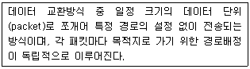
- 메시지 교환방식
- 공간분할 교환방식
- 가상회선 방식
- 데이터그램 방식
(정답률: 54%)
83. 실제 전송할 데이터를 갖고 있는 터미널에게만 시간슬롯(Time Slot)을 할당하는 다중화 방식은?
- 동기식 시분할 다중화(Synchronous TDM)
- 주파수 분할 다중화(Frequency DM)
- 통계적 시분할 다중화(Statistical TDM)
- 광파장 분할 다중화(Wavelength DM)
(정답률: 53%)
84. PSK(Phase Shift Keying) 방식이 적용되지 않은 변조 방식은?
- QDPSK
- QAM
- QVM
- DPSK
(정답률: 49%)
85. 다음 네트워크 A와 B 사이에서 인터네트워킹을 위한 브리지(Bridge)의 일반적 기능으로 옳지 않은 것은?
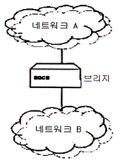
- 네트워크 A에서 전송한 모든 프레임을 읽고, 네트워크 B로 주소가 지정된 프레임들을 받아들인다.
- 네트워크 B에 대한 매체 접근 제어 프로토콜을 사용하여 네트워크 B에게로 프레임을 재전송한다.
- OSI 참조 모델의 데이터 링크 계층에 해당하는 것으로 LAN 프로토콜 중 MAC 계층을 지원한다.
- 네트워크 A에서 송신한 프레임의 내용과 형식을 수정한다.
(정답률: 43%)
86. IPv4와 IPv6의 패킷 헤더의 비교 설명으로 틀린 것은?
- IPv4의 프로토콜 필드는 IPv6에서 트래픽 클래스(Traffic Class) 필드로 대치된다.
- IPv4의 TTL 필드는 IPv6에서 홉 제한(Hop Limit)으로 불린다.
- IPv4의 옵션 필드(Option Field)는 IPv6에서는 확장 헤더로 구현된다.
- IPv4의 총 길이 필드는 IPv6에서 제거되고 페이로드 길이 필드로 대치된다.
(정답률: 41%)
87. OSI 7 layer의 계층별 기능으로 틀린 것은?
- 물리계층 : 기계적인 규격과 전기적인 규격 규정
- 네트워크계층 : 효율적인 경로선택
- 세션계층 : 응용프로세스간 대화 제어
- 데이터링크계층 : 정보표현 형식을 구문형식으로 변환
(정답률: 60%)
88. 인터-네트워킹(Inter-Networking)을 위해 사용되는 네트워크 장비와 가장 거리가 먼 것은?
- 리피터(Repeater)
- 게이트웨이(Gateway)
- 라우터(Router)
- 증폭기(Amplifier)
(정답률: 60%)
89. OSI 7계층 중 데이터링크 계층의 프로토콜은?
- PPP
- RS-232C/V.24
- EIA-530
- V.22bis
(정답률: 57%)
90. 매체 접근 제어 방식 중 CSMA/CD와 토큰 패싱(Token passing)에 대한 설명으로 틀린 것은?
- CSMA/CD는 버스 또는 트리 토폴로지에서 가장 많이 사용되는 기법이다.
- 토큰 패싱은 토큰을 분실할 가능성이 있다.
- 토큰 패싱은 노드가 증가하면 성능이 좋아진다.
- CSMA/CD는 비경쟁 기법의 단점인 대기시간의 상당부분이 제거될 수 있다.
(정답률: 58%)
91. 다음이 설명하고 있는 ARQ 방식으로 옳은 것은?
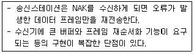
- Stop and Wait ARQ
- GO-back-N ARQ
- Re-Sending ARQ
- Selective-Repeat ARQ
(정답률: 65%)
92. 회선교환 방식에 대한 설명으로 틀린 것은?
- 호 설정이 이루어지고 나면 정보를 연속적으로 전송할 수 있는 전용 통신로와 같은 기능을 갖는다.
- 호 설정이 이루어진 다음에 교환기 내에서 처리를 위한 지연이 거의 없다.
- 회선이용률 면에서는 비효율적이다.
- 에러 없는 정보전달이 요구되는 데이터 서비스에 매우 적합하다.
(정답률: 24%)
93. 이동 단말이나 PDA와 같이 소형 무선 단말기상에서 인터넷을 이용할 수 있도록 해주는 프로토콜의 총칭은?
- POP
- WAP
- SMTP
- FTP
(정답률: 63%)
94. HDLC(High-level Data Link Control)의 링크 구성 방식에 따른 세가지 동작모드에 해당하지 않는 것은?
- PAM
- NRM
- ARM
- ABM
(정답률: 64%)
95. 다음이 설명하고 있는 인터넷 서비스는?
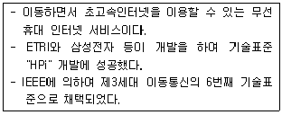
- Ubiquitous
- WiBro
- RFID
- VoIP
(정답률: 74%)
96. X.25 프로토콜에 대한 설명으로 옳은 것은?
- OSI 7계층 중 제2계층인 데이터링크 계층에 속한다.
- DTE와 DCE 사이의 인터페이스에 관한 규정이다.
- 회선 교환망에서 사용된다.
- 메시지 단위로 전송이 이루어진다.
(정답률: 61%)
97. 다음이 설명하고 있는 디지털 신호 부호화 방식은?
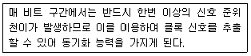
- NRZ-L
- TTL
- Manchester
- TDM
(정답률: 74%)
98. 블록(block) 단위로 데이터를 전송하는 방식은?
- 비동기 전송
- 동기 전송
- 직렬 전송
- 병렬 전송
(정답률: 57%)
99. PCM(Pulse Code Modulation) 방식에서 PAM(Pulse Amplitude Modulation) 신호를 얻는 과정은?
- 표본화
- 양자화
- 부호화
- 코드화
(정답률: 46%)
100. 문자 동기 전송방식에서 데이터 투과성(Data Transparent)을 위해 삽입되는 제어문자는?
- ETX
- STX
- DLE
- SYN
(정답률: 70%)